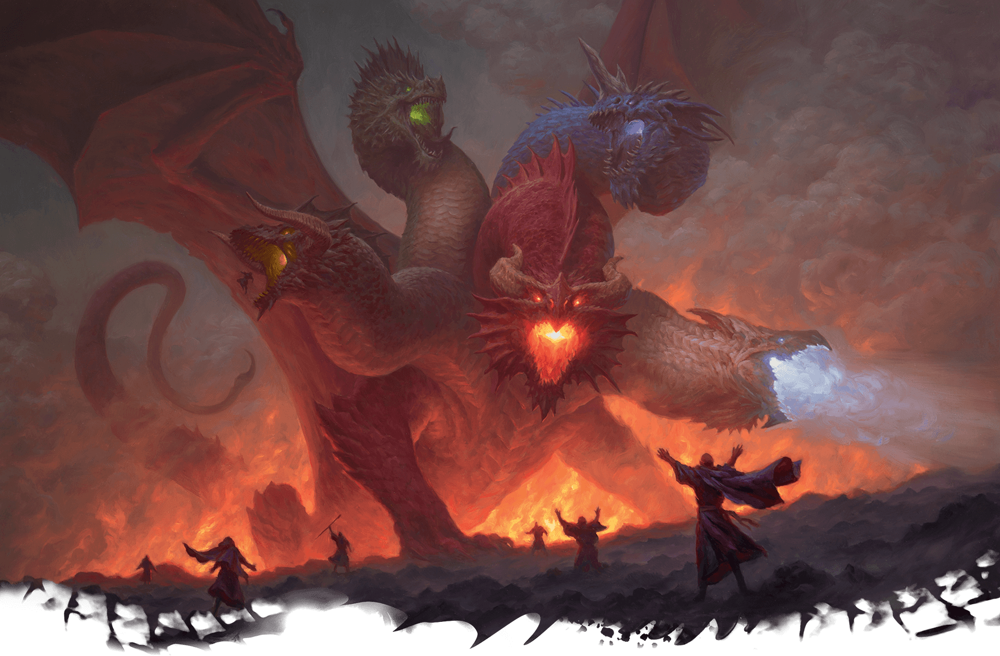

Dragões desempenharam um papel significativo em várias culturas, sendo representados de
maneiras diversas na origem asiática. Na China, por exemplo, surgem representações de
dragões assemelhados a jacarés chineses e carpas gigantescas. A disseminação de boatos levou
à criação de uma criatura composta por olhos de tigre, corpo de serpente, bigode de carpa,
pata de águia, orelha de boi e chifres de veado. O mito associado a essa figura remonta à
história de uma carpa que, com grande determinação, nadou contra uma cachoeira, evoluindo
para um dragão ao atingir os portões celestiais.
Outros dragões asiáticos, como os da Coreia e do Japão, compartilham semelhanças físicas e
são comumente associados a imagens benevolentes, frequentemente ligados a poderes como
controle climático ou a capacidade de conceder desejos.
As representações de dragões abordadas neste projeto remontam a eras tão antigas quanto a
própria existência humana. Desenhos datados de 40.000 a.C. foram descobertos em cavernas na
Austrália, e referências a essas criaturas podem ser encontradas em textos bíblicos. Nessas
interpretações, os dragões são frequentemente retratados como bestas ferozes, destituídas de
inteligência, em contraste com a visão asiática.
A dificuldade em estabelecer uma origem precisa para essas lendas é evidente, embora se
suponha que elas possam ter derivado de ossos de dinossauros ou baleias.
Há uma profusão de representações de dragões na cultura popular, como os encontrados em
"Harry Potter", "Como Treinar Seu Dragão" e "Pokémon". No entanto, neste trabalho, focaremos
em dragões mais alinhados com representações como Smaug de "O Hobbit", Saphira de "Eragon" e
Paathurnax de "Skyrim", seres dotados de intelecto equiparável ou superior ao
humano.
Abordando o tópico principal, explorarei os dragões presentes no universo de Dungeons and
Dragons. Nessa esfera, os dragões são divididos em duas categorias: os cromáticos e os
metálicos. Os dragões cromáticos, associados à deusa Tiamat da ganância e vingança, tendem a
manifestar naturezas más, enquanto os metálicos, vinculados ao deus Bahamut da justiça e
nobreza, inclinam-se para a bondade. Assim, os dragões cromáticos assemelham-se aos dragões
orientais, enquanto os metálicos compartilham semelhanças com os ocidentais. Esses seres, ao
atingirem a fase adulta, recebem uma forma humana como uma bênção de seu deus.


As imagens fornecidas são extraídas diretamente do livro de regras do Dungeons and Dragons,
onde Bahamut é representado tanto em forma humana quanto na forma de um dragão de platina.
Por outro lado, Tiamat é predominantemente retratada em sua forma de dragão, refletindo a
percepção de seus seguidores, que a veem como uma governante temida e respeitada.
Decidi fazer meu trabalho sobre dragões porque são criaturas mitológicas que desde pequeno admirava, quando pequeno os admirava pela presença e intimidadora e sempre tive vontade de ser assim. Mas conforme fui crescendo e conhecendo sobre as culturas conheci histórias e lendas de dragões heroicos então me inspirei por elas. Aos meus 14 anos conheci o universo de Dungeons and Dragons jogando com meus amigos, então comecei a entender os dragões deste universo, e passei a amar a história, inspiração na própria cultura real e a própria filosofia que os dragões carregam. Com isso em mente esse trabalho se apoia no objetivo de desenvolvimento sustentável da ONU número 4 Educação de qualidade, afinal conta lendas e histórias que inspiraram as pessoas e agrega cultura de diversos países e as origens por trás das lendas.